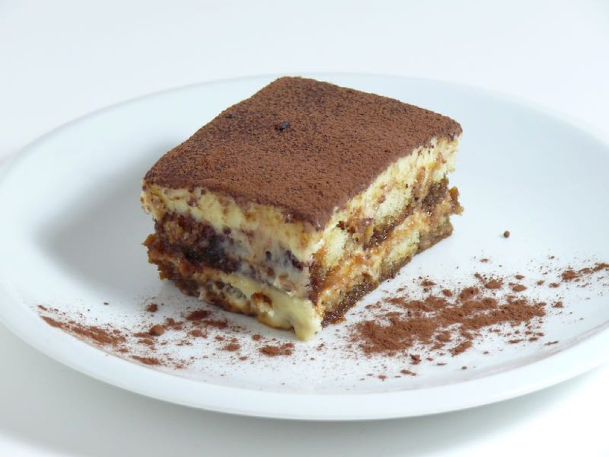

Back to Homepage
Tiramisú

Dust the top of the tiramisu with cocoa powder for an impressive no-bake dessert!
Tiramisu is a classic Italian layered dessert that's easy to make at home with coffee-soaked ladyfingers, a creamy mascarpone custard, and whipped cream.
Ingredients
- Eggs Yolks.
- Sugar.
- Milk.
- Cream.
- Vanilla.
- Mascarpone.
- Coffee.
- Rum.
- Ladyfingers.
- Cocoa Powder.
Steps
- Make the filling.
- Make the whipped cream.
- Soak the ladyfingers.
- Assemble the tiramisu.